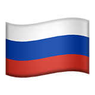

:Choose site language, using right button
:Choose site language, using right button
:Выберите язык сайта кнопками справа
=====Полезная информация=====
1. Как зарабатывать
2. Как переводить?
3. QCH [QlegacyCoin] - Побольше валюта / крипта (не настоящая, виртуальная)
4. Совместимость с QLegacy Семейство Дискорд Ботов [QLFDB].
1. Как зарабатывать???? Копайте! Введите !mine, с шансом в 90% Вы можете получить от 10 до 100$, а также с 10% - бот пишет, что вы промахнулись и не зарабатываете. Но все же, стоит попробовать!
2. Как переводить деньги?
Вам нужно ввести команду !pay [сумма] [пользователь]. Пожалуйста, убедитесь, что у вас достаточно средств для перевода.
3. QCH [QlegacyCoin] - Побольше валюта / крипта (не настоящая, виртуальная)
С помощью !qtranslate [сумма] Вы можете обменять свои деньги на QEC. Команда отнимает 0.03$ за каждое транзакцию, с учетом изменения курса в dollar2qpaycourse.json. Заходите и проверяйте наш обменник!
4. Совместимость с QLegacy Семейство Дискорд Ботов [QLFDB].
Наши боты обеспечивают проверку кошельков и транзакций, а также позволяют настраивать валюту, прямо из бота. С помощью команды !qcourse можно узнать текущий курс QEC к $.
5. Кастомизация своей крипто карточки: от кастомной картинки до цены.
Слева на панельке "Информация о кошельке" есть информация не только о карточке, деньгах и тд, здесь ещё есть и такая достопримечательность как "Скин карточки" Он дает возможность посмотреть на вид карточки и как она выглядит с двух сторон. НИКОГДА И НИ ПРИКАКИХ ОБСТОЯТЕЛЬСТВАХ НЕ ДАВАЙТЕ КОМУ ЛИБО ЭТОТ ДОКУМЕНТ ИНАЧЕ БУДЕТ ПЛОХО: 1. ПРОСТОЙ БАН КАРТОЧКИ И 2. БАН В ДИСКОРД КАНАЛЕ!!!!!!!!!!!!!! что бы сменить скин: !cardskin delete - ставит дефолтный скин (бесплатно) !cardskin set - ставит тот скин который вы скините боту (платно за 5 QEC)
Дополнительно: Боты также включают в себя систему энергии, которая ограничивает количество действий, а также может применяться для создания дополнительных действий.
Связаться с поддержкой